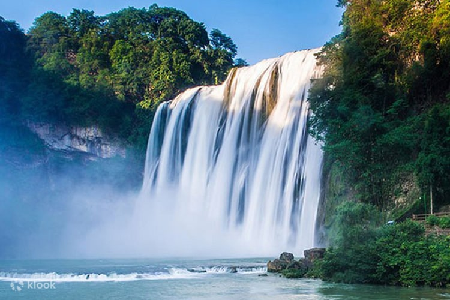

Located in southwestern China, Guizhou is famous for its marvelous landscapes, unsophisticated ethnic customs, cultural and historical relics, and pleasant climate.
It's the well-known Karst topography, the Huangguoshu Waterfall, Fanjing Mountains, and Xijiang Miao Village.
In Guizhou, you will see landlocked, with beautiful mountains, lovely lakes, a nice climate, good food, and friendly people speaking in different languages in different regions.
When you walk in the beautiful village, enjoying the beauty of nature, you will find this is an earthly paradise.
At 67 meters high and 83 meters wide, is the biggest and most famous waterfall in China and the whole of Asia.
At an altitude of 2,493 meters and with forest coverage of 95%, Fanjing Mountain is a famous Buddhist mountain and an ideal summer resort. It was listed as a Natural World Heritage site on July 2, 2018.